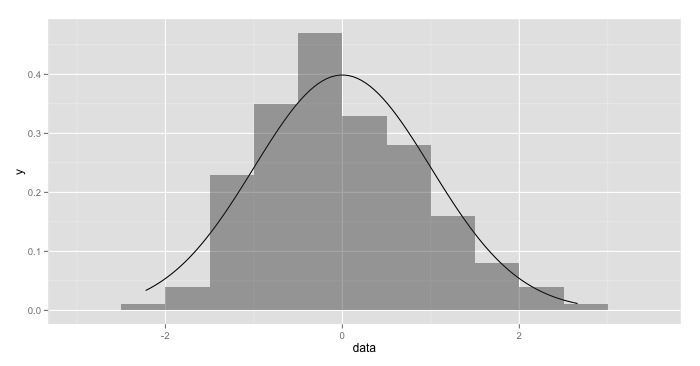
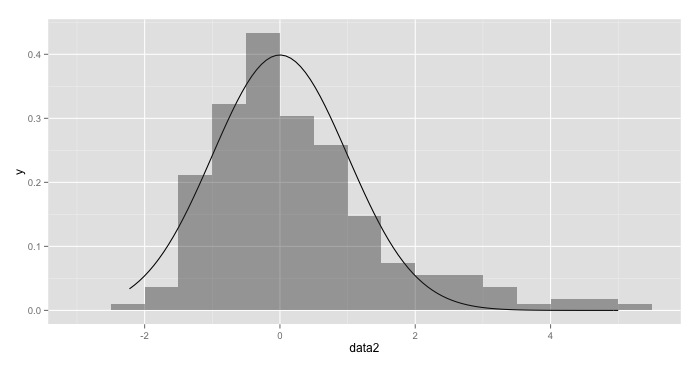
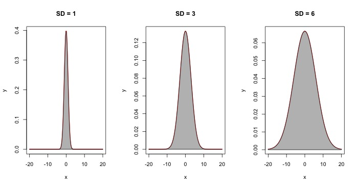

Measuring Uncertainty
Measures of Central Tendency and Spread
Mean, Median, Mode
Mean, median, and mode represent the three common ways of describing important features of a data set at a glance. The arithmetic mean of a sample, \( x_1, x_2, \ldots, x_n \), is denoted by \( \bar{x} \) (pronounced "x-bar"). For a sample of \( n \) observations, it is calculated:
$$ \bar{x} = \frac{x_1 +x_2+\ldots +x_n}{n} $$Alternately, it may be represented as:
$$ \bar{x} = \frac{\sum_i^n x_i}{n} $$This means we add up every item in a set of \( n \) items and then divide by however many items we added together. Here, the capital sigma indicates that we take a sum (that is, we add up all the values). This is the most commonly-used measure of central tendency, although it should never be used when dealing with ordinal or categorical data. (That is, ranked data—such as "rate these from best to worst"—or categories—such as male/female or religion. Although technically possible, the result will be difficult to interpret, if not impossible.)
The median of a set of data is, quite literally, the middle value. If we take a series of numbers, order them from smallest to largest, and pick the number that's right in the middle (think of a see-saw balancing at its fulcrum), then we have the median. This can be calculated in many of the same cases as the mean and is more resistent to outliers (values that are unusually far away from most other data points) than is the mean.
Finally, the mode is the most frequently-occurring number in a series of data. Usually, we will compute the mode when working with categorical data: for instance, it could tell us that the majority of survey respondents were female or were Jewish or lived in the Midwest.
If we want to calculate these in R, we would do something like this:
# First we will generate 200 random values
# with mean 0 and standard deviation 1
> set.seed(0)
> data <- rnorm(200, mean=0, sd=1)
# Now we will find the mean:
> mean(data)
[1] -0.01144155
# We can see that the mean of -0.011 is
# close to the value (0) we specified above.
# Next let's calculate the median
> median(data)
[1] -0.1061751
# We see that the median differs from the mean!
# That means that our data are a little skewed
# We'll talk about skewness in the next section.
Skewness and Mean vs. Median
To get an idea of skewness, let's make a histogram of those data that we just generated. If you aren't familiar with a histogram, it takes your data and counts how many data points fall within a certain range, giving you something like this:
The smooth line that you see above is the normal distribution; the columns represent our actual observations. As you can see, the two don't line up perfectly. Rather, our graph is stretched out to the right a bit. We call this stretching skewness: the idea that, rather than being perfectly symmetrical about the mean, out data are stretched out to the right or to the left. In cases where our data are stretched out to the right, we say that they are skewed right; when they are stretched to the left, we say they are skewed left.
Many times, as in this example, there isn't very much skewness and our data, even though they aren't perfect, are still fairly symmetrical. However, sometimes we will have strong outliers that really mess up that symmetry. For instance:
Here, we have a strong rightward skew. Now, let's go ahead and compare the means and medians of our two datasets:
# First we'll compare the means
> mean(data)
[1] -0.01144155
> mean(data2)
[1] 0.2489018
# And now the medians
> median(data)
[1] -0.1061751
> median(data2)
[1] -0.005767173
As you can see, both the mean and the median change. However, the median changes much less than the mean does. (There's a change of 0.26 in the means versus a change of 0.10 in the medians.) In casaes where you have strongly skewed data, it will often be better to describe them using the median rather than the mean: specifically, the median is what we call resistent to outliers. In other words, when you have a few outliers (numbers that are far away from every other data point), the median will be changed much less than the mean will.
Standard Deviation
Standard deviation (represented as \( s \) or \( \sigma \)) is a measure of dispersion: that is, it tells us how far from or close to the mean our data tend to be. A data set with a small standard deviation, for instance, tells us that most of our data points are fairly close together and are all near the mean. Alternately, a large standard deviation means that our data points are much more spread out. We can visualize this using three data sets, all with mean \( \mu = 0 \) but with different standard deviations:
Even though each of these three sets of data has the same mean (0), it's pretty clear that there are some big differences between each of them. This is why standard deviation is important to know and report: without it, you aren't going to be getting a complete picture of what your data look like. They could all be close to the mean, as in the graph on the far left, or they could be much more spread out, as in the graph on the right.
Now, before we can use standard deviations, we have to calculate them. The formula for standard deviation looks like:
$$ \sigma = \sqrt{\frac{1}{n}\sum_{i=1}^n\left(x_i-\mu\right)^2}\text{, where } \mu=\frac{1}{n}\sum_{i=1}^n(x_i) $$Let's unpack that: it's saying that we start by finding the mean (\( \mu \)) of the data. Next, we'll go ahead and take every data point and subtract the mean from it (the \( x_i-\mu \) part of the equation). So what we're doing is basically finding out how many units away from the mean each data point is. But there's a problem: some data points might give us a negative number, others a positive number. So we'll take that difference and raise it to the second power (remember, a negative number times a negative number is always equal to a positive number). Now we just repeat that for every other data point in our sample and add them all together.
So now we have summed up all of those squared differences, right? Next, we will divide by the number (\( n \)) of observations (just like when we calculated the mean) to get the average distance from the mean. But there's one last step before we're done: since we raised everything to the second power a couple steps ago, we have to undo that operation. To do this, we'll take the square root of everything, leaving us at last with the standard deviation.